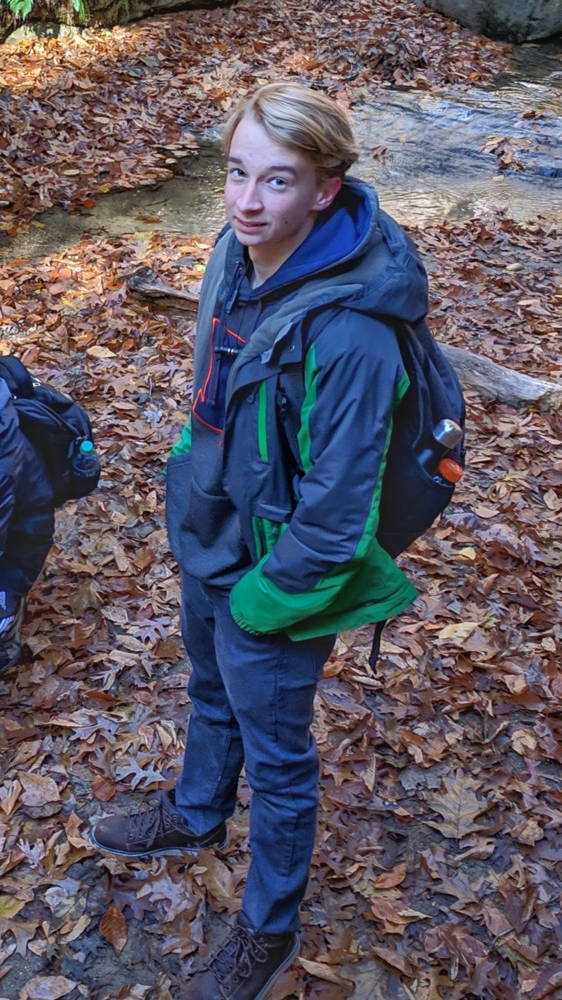

Braeden Smith
Hey! My name is Braeden, and I’m currently a Sophmore at the University of Illinois at Urbana-Champaign - majoring in Computer Engineering. You can often find me playing poker, or bouldering/sport climbing at the local gym! I'm currently seeking a Software Engineering Internship for Summer 2020!
My current project, a poker RFID reader and live streaming tool, can be found here. And feel free to peruse the other OSS projects I've worked on, in the projects sidebar or on my Github.
I've worked for several super awesome companies, doing software development for companies like Castle.io and CAST Software
Please check out my resume or my LinkedIn for some more details. Or feel free to shoot me an email